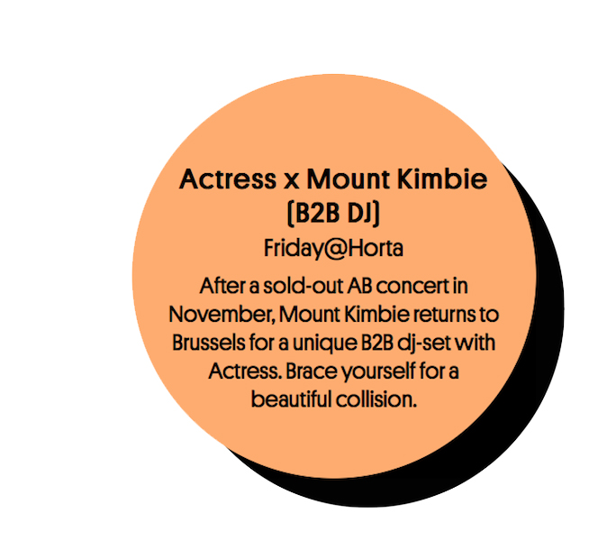
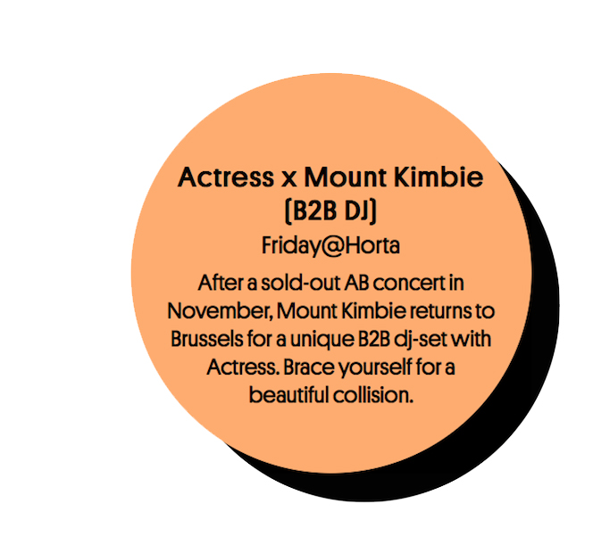

start exploring
ranking

Listen Festival is a music festival in Brussels that focuses on electronic music and innovation. With an interactive and playful website on which you can mix your own 'Listen Festival-sound' they maximize the music experience. The Festival's diverse, qualitative and accessible program enables the Belgian scene to interact with the music industry and join the conversation about its future by offering record fairs, conferences, workshops, and internet radio. The program allows visitors to emerge in a balanced out mix of local, national and international artists. Its website reflects the interactivity of the festival.
This website has a great interactive homepage. Moving the colourful dots on the homepage allows you to slightly change the song that is playing. The dots each represent a different instrument or sound such as "bass", "percussion", "shaker" and "organ." The name reveals itself once you hover over the colorful dot. The lineup page keeps the same aesthetic of the dots. It is very easy to view the lineups of the different locations. If you hover over the artist's image, their name, a short bio on them and the day they are playing at the festival show up. If you click on the image, it takes you to the artist's blog, youtube or soundcloud. Linking the artists' music is a great aspect as most people want to get acquainted with the artists' music before the festival.
The website has some aesthetic inconsistencies accross its pages. It uses a lot of circles and bright colors in its Homepage and in its Lineup page. However the rest of it's pages use rectangles to display information. The Ticket page is the least thought through page. There is too much text in each block and there are no interactions or animations as in some of the other pages. When navigating the different pages, there is no indication as to which page you are on. The tab title does not change and the bar menu at the top of the page does not highlight which page you are on. Lastly, the menu does not always work. Sometimes the News button takes me to the Homepage.
The Music Button
The Lineup Page - orange circle shows when you hover over an artist's image.
 

The Tickets Page
The News Page
The FAQ Page